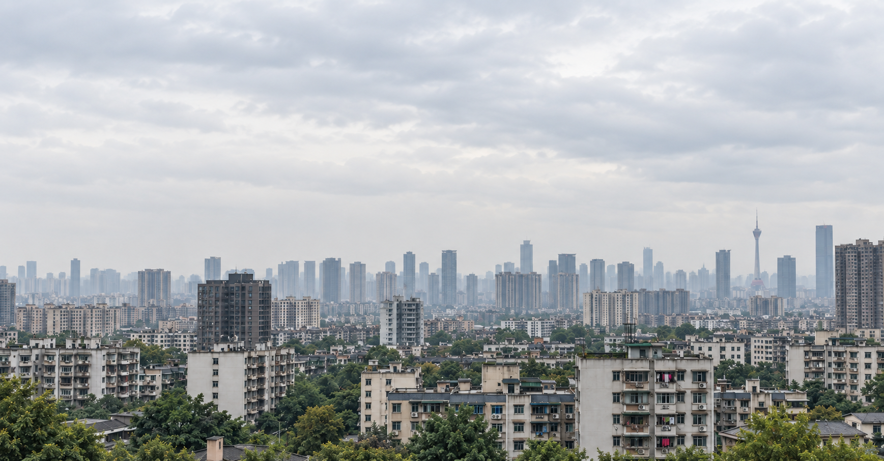

从 2014 年开始的小时序列
空气质量历史范围为 2014 年 5 月至 2025 年 12 月。污染物与气象信息按小时对齐；有时间刻度，不代表每个时刻都有有效观测。

AQI 短暂下降，
并不意味着污染过程已经结束。
本项目以 AQI ≤ 100 且连续保持 6 小时作为恢复判定条件，研究从当前时刻到这段稳定恢复窗口开始，还需要多长时间。
关注的不只是下一小时的浓度，而是一次污染过程何时结束。
沿着时间顺序，
还原每一次污染与恢复。
空气质量历史范围为 2014 年 5 月至 2025 年 12 月。污染物与气象信息按小时对齐；有时间刻度，不代表每个时刻都有有效观测。
以加速失效时间模型（AFT）作为研究路线之一，结合污染持续状态与气象条件，估计距稳定恢复窗口的时间。观测中断与恢复时间不确定的样本单独处理。
训练与验证按年份先后划分，不随机打散相邻时刻。既统计逐时误差，也检查整段污染过程，避免长过程中的重复样本掩盖问题。
2022.11.26 — 2022.11.28
成都 · 小时 AQI
只维持了 5 小时，随后再次升高。
到 10:00，连续 6 个小时满足条件。
这是事后确认的恢复时间，不是模型预测值。
| 时间（北京时间） | AQI |
|---|
历史上能解释，
还不等于实时可用。
离线气象资料能帮助分析污染恢复过程，但不能直接视为预测当时已经获得的信息。历史回测与实时预测，需要分开判断。
当前展示的是历史研究与验证案例，不提供实时空气质量监测或公共预警。不同数据范围、年份和评价口径下的误差，也不能直接比较。
下载研究说明